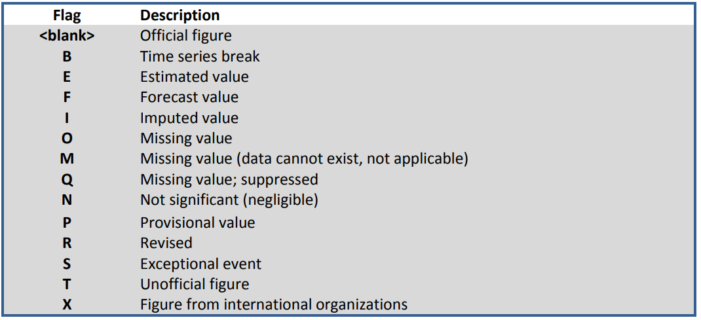

B Code lists
Code lists, also called reference lists in SWS parlance, are the dimensions making up the data sets that are designed by the user to store analytical results from SWS modules. The dimensions are statistical - domain-specific and are defined by the technical unit to reflect its needs regarding data collection, processing, and dissemination while meeting FAO standards. Each data set dimension has a set of codes and their associated descriptions. Thus, code lists serve to the purpose of standardization, visualization, and metadata by associating standardized codes to standardized names in the SWS data set outputs. A typical SWS compliant data set has, therefore, the following dimensions/reference lists:
Geographic area. Representing a spatial scale the information is measured at. For example, countries, territories, regional aggregates, regional special groups aggregates, global aggregates. In SWS, the geographic area dimension used by AQUASTAT data sets is named geographicAreaM49.
Items. Those one wants to take a measurement from. For example, commodities, commodity groups, land use types, species, etc. Typical item dimension names are measuredItemCPC, *measuredItemHS, measuredItem. The AQUASTAT - SWS framework does not include item code/reference list.
Elements. Often representing a measurement that can be taken across different items. For example, area, production, share. In SWS, the element dimension/code list used by AQUASTAT aquastat_legacy dataset is named aquastatElement.
The aquastatElement variable in the aquastat_legacy dataset is not SWS compliant. However, the SWS reference list used by the system to map out element codes to definitions is also named aquastatElement. It is OK to keep aquastatElement as variable name in the legacy data, but the idea is that all datasets produced in the SWS should adhere to SWS standards.
Time (the time unit the data is displayed for: year, months, etc). In SWS, the time dimension used by AQUASTAT data sets is named timePointYears.
Flag (A standardized label indicating origin and/or nature of a number in the data set, e.g.
(Official number)). In SWS, the flag dimension used by AQUASTAT data sets is named flagObservationStatus. Please check the OCS statistical standards and the flags document to understand the flagObservationStatus rational and obtain the description of flags. Figure B.1: Description of flag of observations in the SWS
Method (A standardized label indicating method utilized to obtain a number in the data set. In SWS, the method dimension used by AQUASTAT data sets is named flagMethod. Please check the OCS statistical standards and the flags document to understand the flagMethod rational and obtain the description of flags.
Figure B.2: Description of flag of methods in the SWS
Figure B.3: Typical dimensions (SWS code/reference lists) composing a AQUASTAT SWS - compliant input/output dataset.